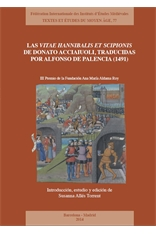

Susanna Allés Torrent
Lecturer in Digital Humanities
Columbia University
Latin American and
Iberian Cultures


Lecturer in Digital Humanities
Columbia University
Latin American and
Iberian Cultures
|  | My first book offers a critical edition of the lives of Hannibal and Scipio written by Donato Acciaiuoli and translated by the Spaniard Alfonso de Palencia. My research explores the textual transmission of these two biographies, inserted around 1470 in the editio princeps of Plutarch’s Parallel Lives and, during many years, considered Plutarchean original works. Palencia, in fact, translated them beliving he was translating the author from Chaeronea. |